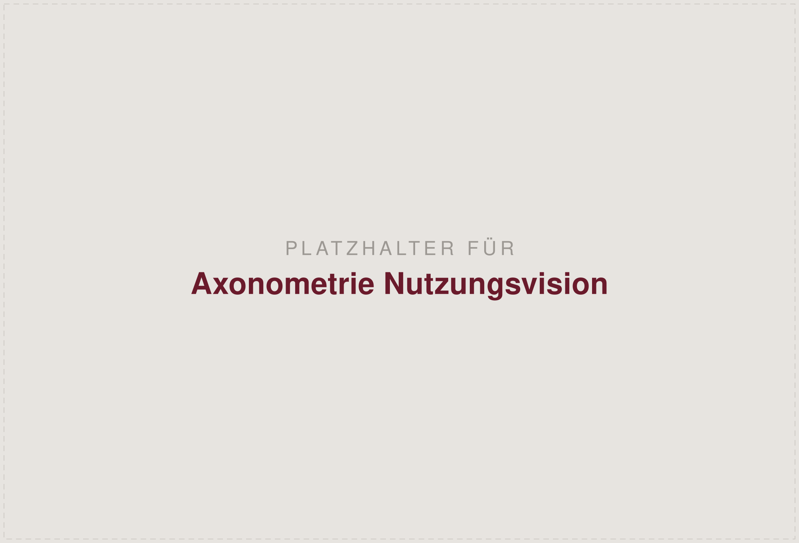
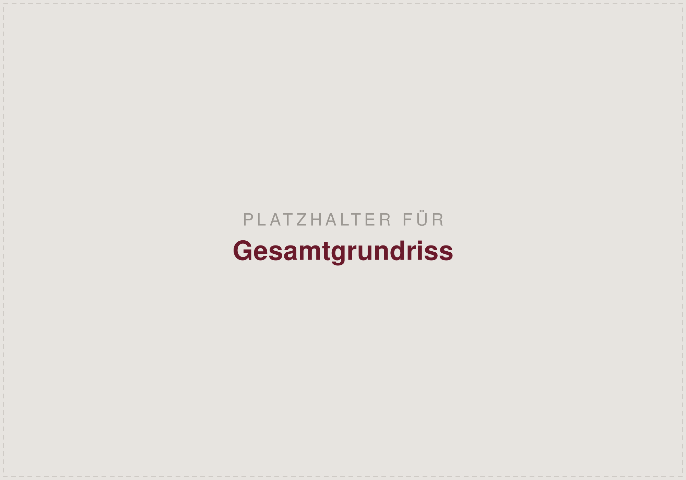
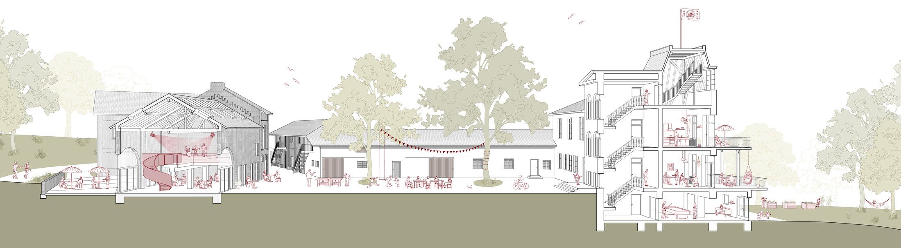
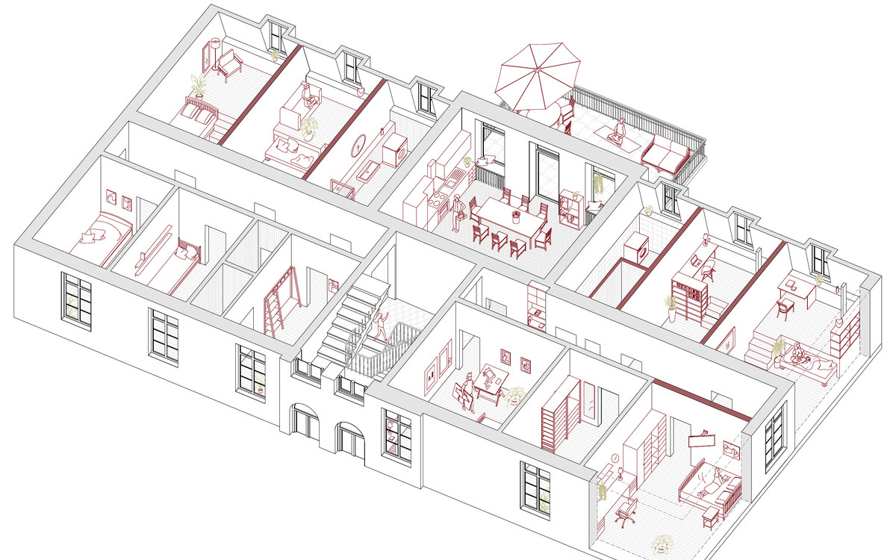
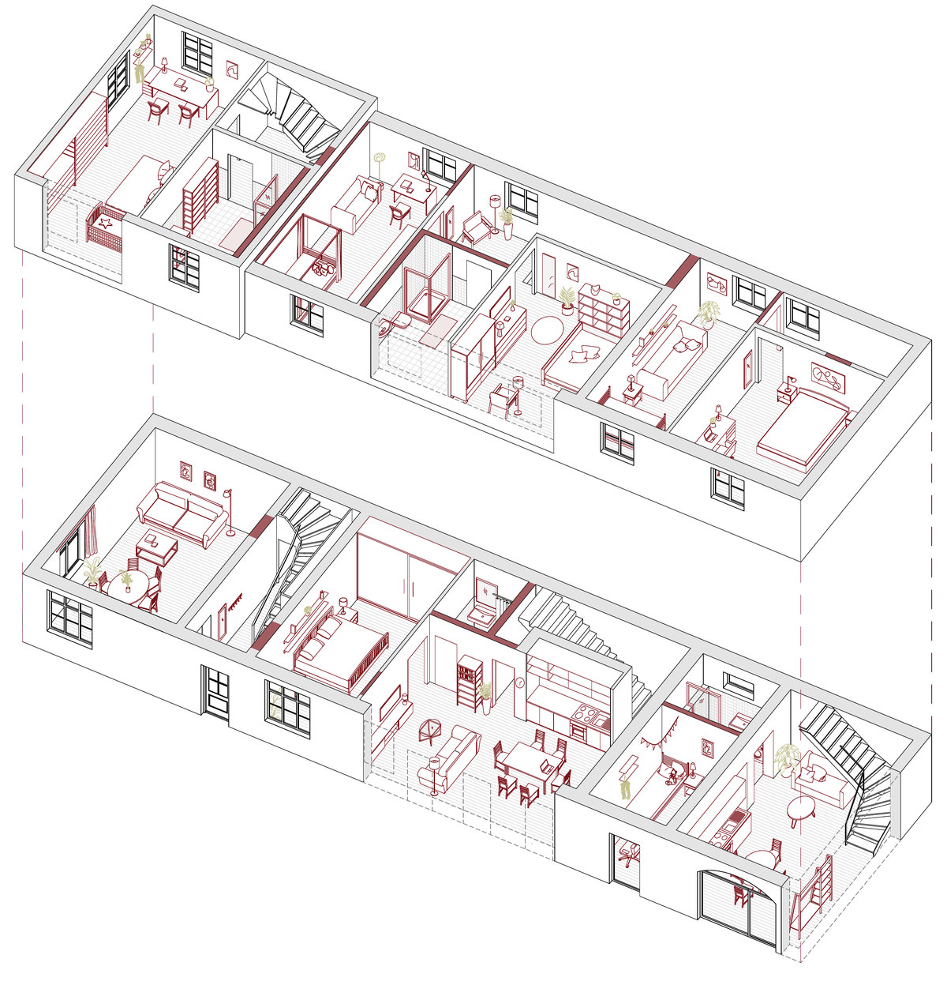
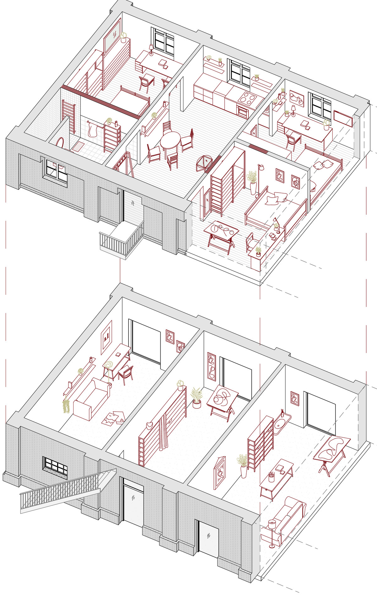
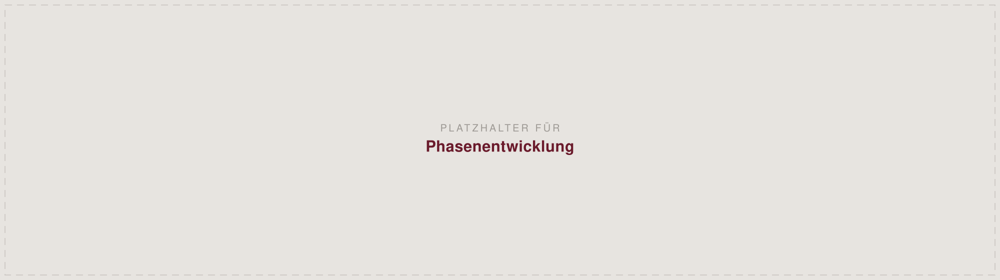

Nominierung
BDA Masters
Nominiert für den Wettbewerb des Bundes Deutscher Architektinnen und Architekten — verbunden mit der Chance auf ein deutschlandweites Stipendium für das Masterstudium.
Entwicklung eines gemeinwohlorientierten Zentrums
Leerstand ist mehr als leere Fläche — mit ihm gehen Erinnerung, Atmosphäre und Identität verloren. Das denkmalgeschützte Hofensemble Gut Melb bei Bonn, um 1845 errichtet, steht seit 2016 leer. Die Bachelorarbeit entwickelt gemeinsam mit der Initiative vor Ort eine Vision, wie der Ort wieder für die Gesellschaft geöffnet werden kann.

Beste Bachelorarbeit des Jahrgangs an der Alanus Hochschule für Kunst und Gesellschaft.
Nominiert für den Wettbewerb des Bundes Deutscher Architektinnen und Architekten — verbunden mit der Chance auf ein deutschlandweites Stipendium für das Masterstudium.
In Deutschland stehen hunderttausende nutzbare Gebäude leer, während jährlich über 12.000 abgerissen und rund 100.000 neu gebaut werden. Wo zuvor Begegnung, Arbeit und Lernen stattfanden, entsteht Leere — räumlich wie sozial. Gerade denkmalgeschützte Ensembles besitzen dabei ein Potenzial, das sich nicht reproduzieren lässt.
Gut Melb liegt auf 11,4 Hektar im Landschaftsschutzgebiet zwischen Poppelsdorf und Ippendorf, unmittelbar an einem Naturschutzgebiet. Bis 2016 nutzte die Universität Bonn das Anwesen. Seitdem stehen die sieben Gebäude mit zusammen 3.929 m² Nutzfläche leer, die Flächen liegen brach, und der Zustand der Substanz wird durch zunehmenden Vandalismus fragil.


Ein Ort, der Gemeinschaft fördern soll, kann nur gemeinsam mit den Menschen entwickelt werden, die ihn später nutzen und mit Leben füllen. Der Entwurf entstand deshalb nicht am Zeichentisch allein, sondern über zwei Zugänge: einen partizipativen Workshop mit der Gut Melb Initiative und einen Tag vor Ort mit einer Umfrage unter Anwohnenden und Bonner Bürgerinnen und Bürgern.
Architektur ist ein soziales Handeln — sozial sowohl in Methode als auch Ziel. Sie ist das Ergebnis von Teamarbeit und dient Gruppen von Menschen zur Nutzung.
Spiro Kostof, 1995
Acht Mitglieder der Initiative, 11:00 bis 16:30 Uhr an der Hochschule. Vormittags ein theoretischer Teil zum Konzeptpapier der Initiative, nachmittags räumliche Arbeit am eigens gebauten Arbeitsmodell 1:100. Aus Styrodur, damit Fähnchen direkt in die Baukörper gesteckt werden können — und damit jede Idee sofort einen Ort bekommt.


Pinke Fähnchen ordnen mögliche Nutzungen den einzelnen Gebäuden und Bereichen zu. Jede Person startet mit zwei Fähnchen — schnell wurden es mehr.
Gelbe Fähnchen für das, was sich kurzfristig und mit überschaubaren Mitteln umsetzen lässt, ohne auf Baugenehmigungen zu warten.
Ein gelber Punkt für Notwendiges, ein roter für persönliche Herzenswünsche. Gastronomie und Seminare erhielten die meisten Stimmen.


Ein Tisch aus dem Atelier, Klappstühle, Kreide auf der Straße. Von 11:00 bis 16:40 Uhr im Gespräch mit Anwohnerinnen, Anwohnern und Passanten. Parallel lief eine Online-Umfrage über Flyer und Aushänge mit QR-Code.

Frage: „Welche Nutzungen könnten Sie sich an diesem Ort vorstellen?“ Mehrfachnennung möglich.
Dass es nicht verfällt und man sich an der Schönheit der Gebäude erfreuen kann.
Aus der Bürgerumfrage
Bewohnerinnen und Bewohner, Besuchende, Künstlerinnen und Künstler, Nachbarschaft, Initiative und Tierhaltende prägen den Hof auf ihre jeweils eigene Weise. Der Entwurf gibt dafür einen Rahmen, der Nutzungen verbindet, statt sie festzuschreiben — und er wird nicht auf einmal umgesetzt, sondern in Phasen entwickelt und erprobt.



Drei Wohnformen teilen sich das Ensemble: eine Studenten-WG, ein Wohnhaus für Familien und Ateliers zum Wohnen und Arbeiten.




Der Entwurf versteht sich nicht als fertiges Ergebnis, sondern als Impuls für den zukünftigen Umgang mit dem Bestand. Er zeigt, wie Gut Melb wieder für die Öffentlichkeit zugänglich werden kann — schrittweise, wirtschaftlich tragfähig und getragen von den Menschen vor Ort.
Abbildungen und Inhalte aus der Bachelorarbeit „Gut Melb — Entwicklung eines gemeinwohlorientierten Zentrums“ von Nicolai Max Schwarz, Lena Teresa Stadtfeld und Luis Valentin Bongardt, Alanus Hochschule für Kunst und Gesellschaft, 2026.
Zitat: Kostof, S. (1995), S. 7. Umfrageergebnisse aus der im Rahmen der Arbeit durchgeführten Bürgerbefragung.